3D Printer Mods for BCN3D SigmaX (2025)
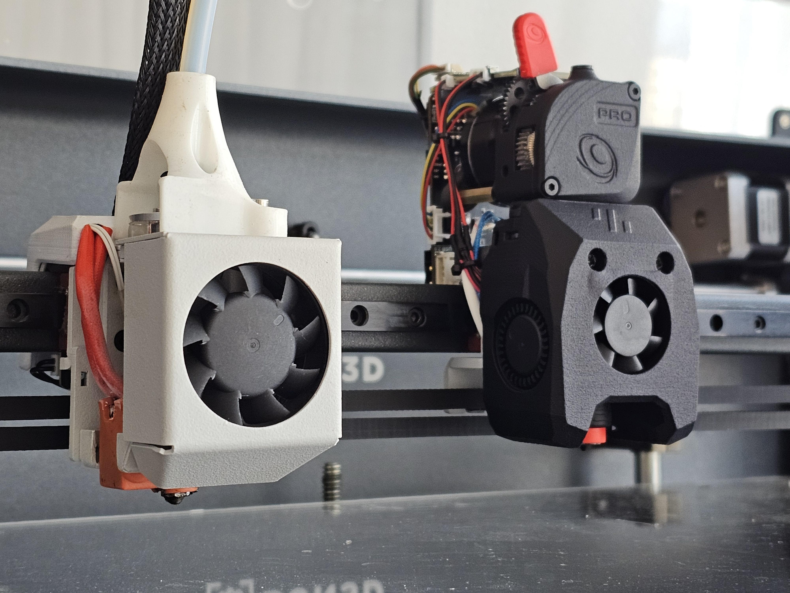
In 2019 my parents helped me buy a second-hand 3D printer, the BCN3D SigmaX R17. On paper it's a great printer with a huge 420x300x200mm build volume and independent dual extruders (IDEX), letting it switch between two filaments extremely quickly e.g. for printing with soluble supports. It has served me great over the years, but by 2025 it has become technologically outdated, and many flaws are apparent. It still uses a bowden-type drive that's bad at dealing with soft filaments, and hotends with a strong tendency to clog. It has a glass print bed (without automatic bed leveling) that regularly leads to prints either adhering too well or not at all. And not to speak of the very expensive replacement parts in case anything breaks. But worse of all, the printer has a buggy firmware/slicer, which regularly freezes mid-print, crashes into the print, or otherwise messes up the print.
In this state the printer was unreliable and very frustrating to work with. So, it was time to replace it. Turns out that my whish list for a new printer is pretty long and difficult to meet at a decent price point. Since the frame and mechanical components of the SigmaX are of very good quality I instead decided to upgrade just about everything else. These upgrades are documented here.
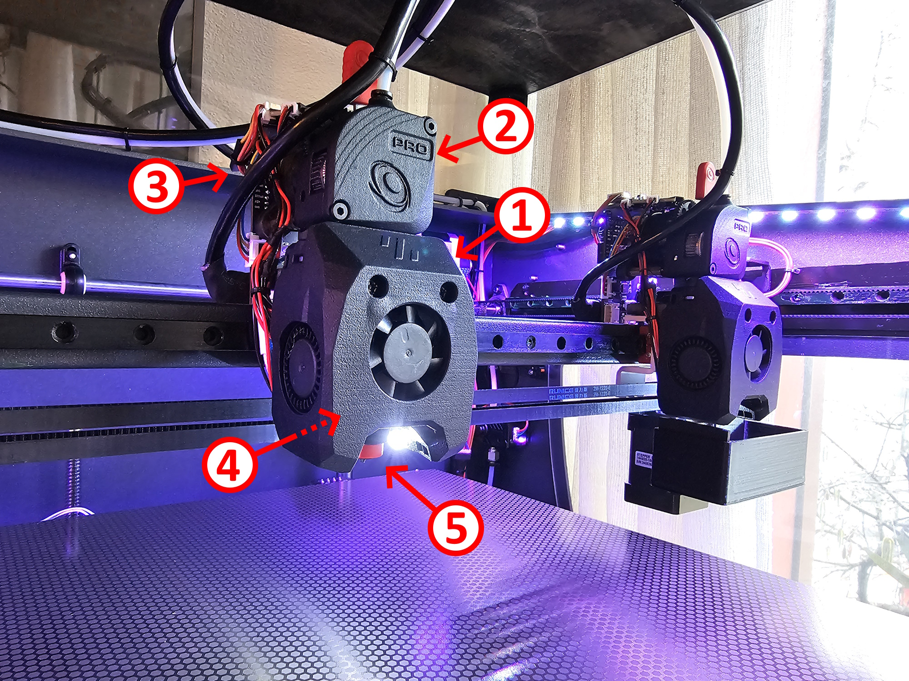
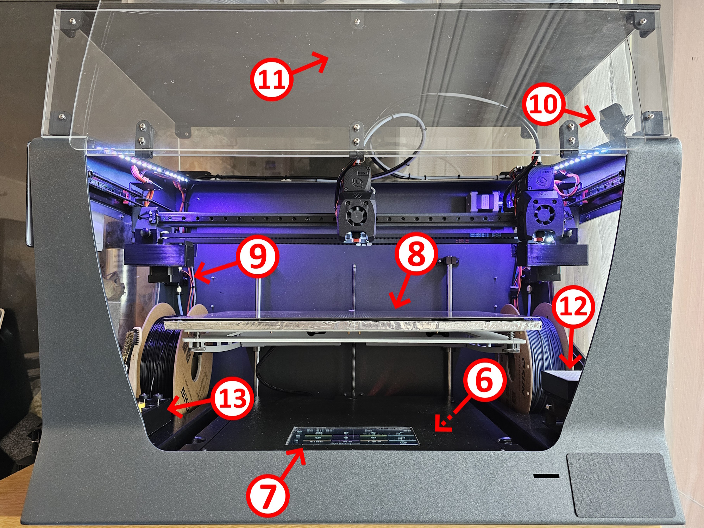
- Voron v0.2 toolhead:
The toolhead of the Voron v0.2 3D printer is a perfect fit, as it is compatible with many common extruders and hotends, while being only 54mm wide.
- Bondtec LGX Lite PRO extruder:
This small direct-drive extruder replaces the previously installed bowden-drive extruder, enabling the printer to print soft filaments without stringing. Due to its much larger drive wheels, it is also far less likely to mangle the filament.
- BTT EBB SB2209 USB controller:
This controller board connects each extruder to the main controller trough a single USB cable, massively simplifying wiring. It also features an accelerometer, so that input shaping can be used.
- E3D PZ Probe:
A piezoelectric probe is installed for bed leveling. It measures the force spike when gently "crashing" the nozzle into the print bed to determine the distance between the two. This technology is vastly superior to switch based, optical, magnetic or inductive sensors, as it uses the actual nozzle to measure without requiring a high contact force. This way there is no need to worry about manual recalibration when swapping the nozzle.
- E3D Revo nozzle and heater:
The Revo hotend system features a 60W heater and a vast array of nozzles, from 0.15mm to 1.4mm, that are very easy to swap. I myself went with a set of 0.25mm, 0.4mm and 1.0mm nozzles, with the last two being of the hardened high-flow variety, used for large/quick prints with challenging materials.
- BTT Manta M8P V2.0 + TMC2209 + RPI CM4:
For the main controller I went with the BTT Manta M8P, paired with TMC2209 stepper drivers and a Raspberry Pi Compute Module 4, running the Klipper firmware. This combination is pleasantly compact while offering a lot of I/O and being easy to customize.
- BTT HDMI7:
The old tiny touchscreen was replaced with a much larger 7'' touchscreen, displaying the KlipperScreen GUI. A massive improvement in ergonomics.
- Keenovo Silicone Heater 900W:
The preinstalled 260W PCB build plate heater was replaced by a 900W heater, vastly decreasing heatup time. I mounted a thin mirror on top of the heater to ensure flattness, and an insulating sheet below to mitigate heat losses. Furthermore I glued a magnetic sheet on the mirror to receive spring steel build plates, coated with either PEI, PET, or a special coating for PA/PC from BuildTak. This is also a big improvement over the preinstalled borosilicate glass build plate.
- BTT SFS V2.0 filament sensor:
This filament sensor can not only detect filament runout, but it can also detect filament jams by means of an idler wheel attached to an encoder. Thanks to it I'm much more comfortable in leaving the printer unattended for long durations.
- Generic webcam:
In case something still goes wrong I installed a webcam, so that I can regularly check in on the prints and abort them, even when I'm not home.
- Aftermarket enclosure:
To enable printing of materials that require a heated chamber I got an aftermarket enclosure. It used to be a ridiculous 30cm high to fit the usually installed stiff bowden tubes. Now that those are no longer present, I was able to trim it down by 20cm and vastly reduce the volume of air that needs to be heated.
- Air filter:
Together with the aftermarket enclosure I got a HEPA particulate filter, which is now installed to the side. I combined it with an activated charcoal filter to also get rid of volatile organic compounds VOCs.
- Tool rack:
Lastly, a custom tool rack is made to house the nozzles, a spatula, a brass brush, and a nylon brush.
Besides customizing the printer itself, I also had to heavily customized the printer configuration files, as IDEX printers are not very common in Klipper. This included custom start/end G-code, custom tool change routines, and custom filament change routines. The last of which was challenging, as I wanted the printer to continue printing until the filament ran out at the extruder, which is ~80cm from the filament switch/encoder.
I picked OrcaSlice as a slicer because it seems well supported and frequently updated with new features. However, I did have one big pet peeve with it. When using user-defined printers, common settings are not synced between variants. So, if I wanted to change a setting for all nozzles, or for all layer heights, or for all material families, I would have to do it for each one individually. Incredibly cumbersome. Preinstalled printers in OrcaSlicer do however have the ability to heredit settings from common sources. So, I went to great lengths to define my printer as one of these.
Both my Klipper configuration as well as my OrcaSlicer profiles are available on github.com/mruggia/sigmaz
Currently there are still a few shortcomings of the upgraded printer that I wasn't able to address. With the upgrade I lost about 50mm in Y-travel, which could be gained back by moving the Y-axis stepper out of the way. Harder to solve is the problem of the largeish moving mass, which could be addressed with a CoreXY pulley arrangement, but since ringing is barely noticeable this major upgrade is postponed indefinitely. Also postponed is support for very high temperature filaments like PEEK, as many parts of the printer can't withstand the necessary chamber temperature.
Photos
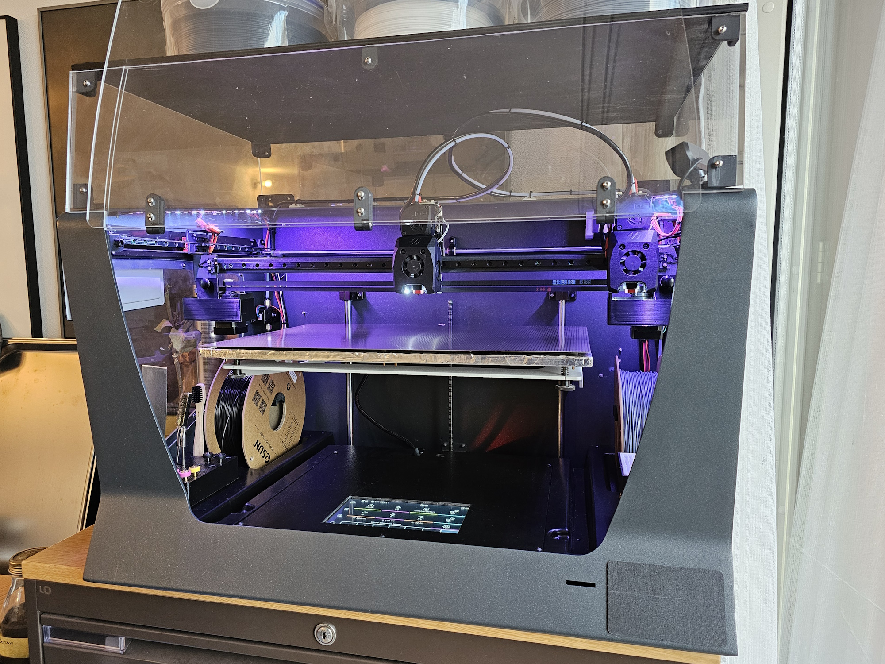
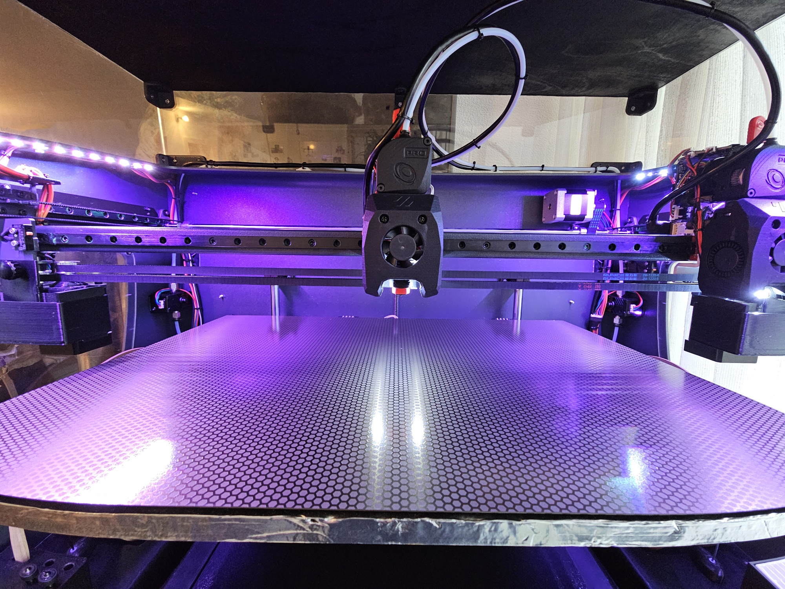
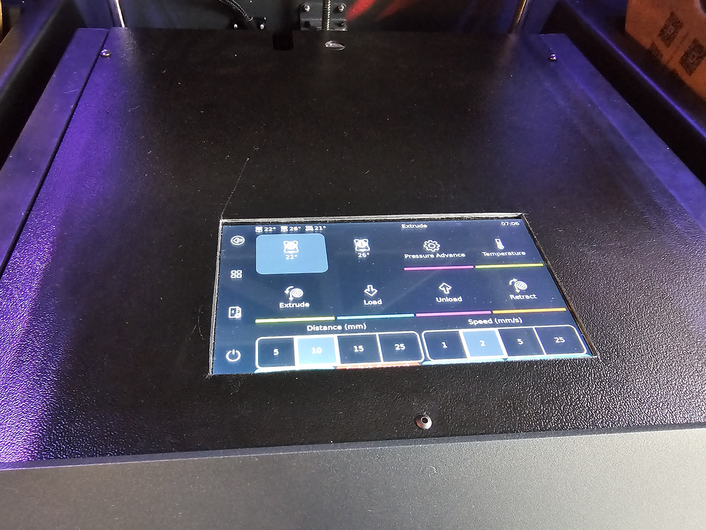
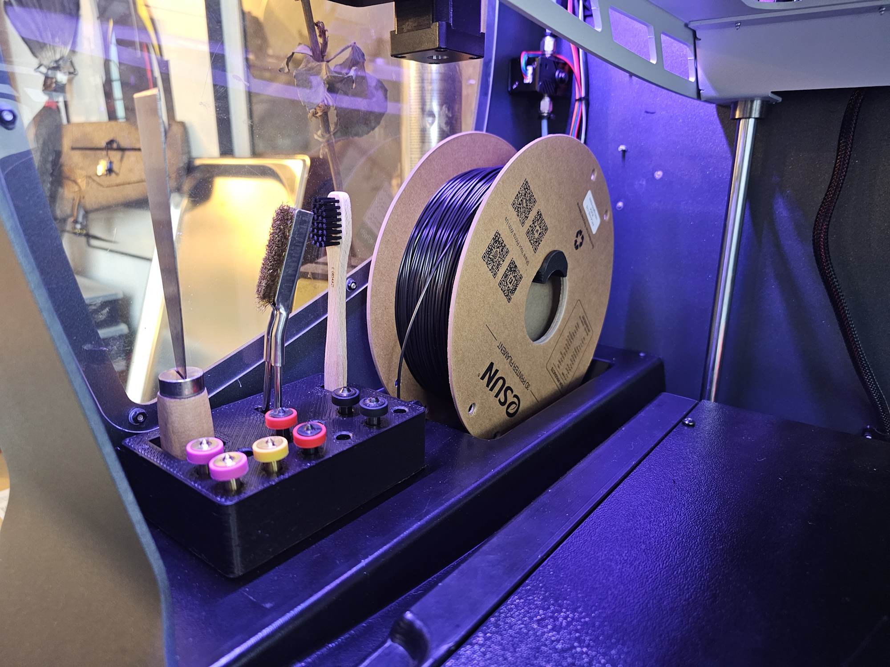
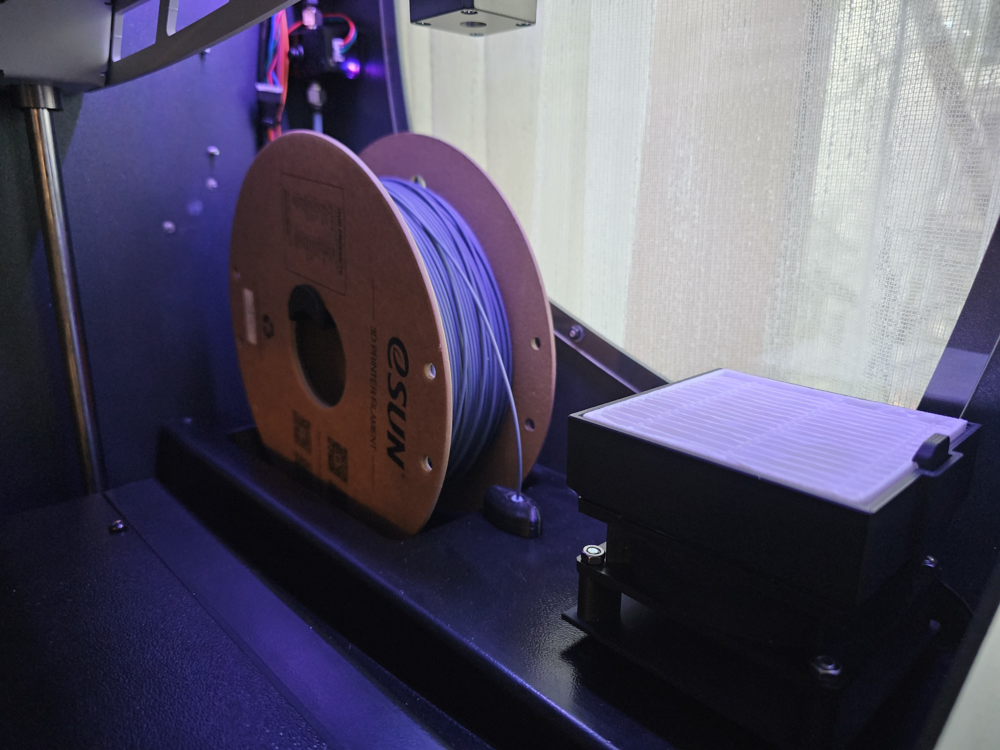
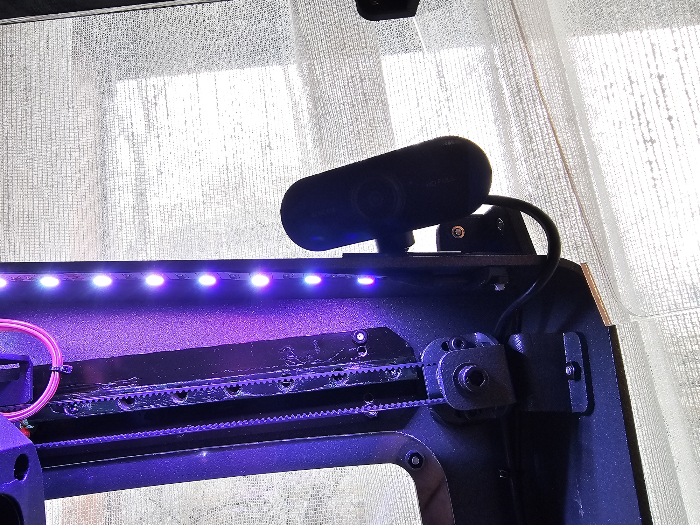
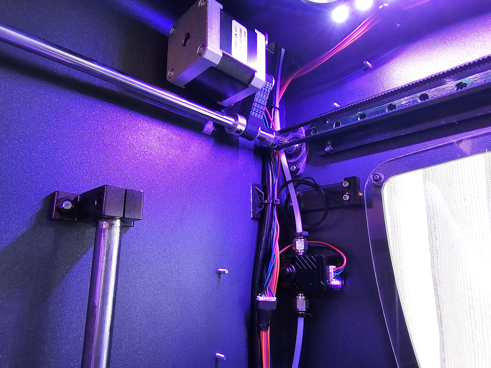
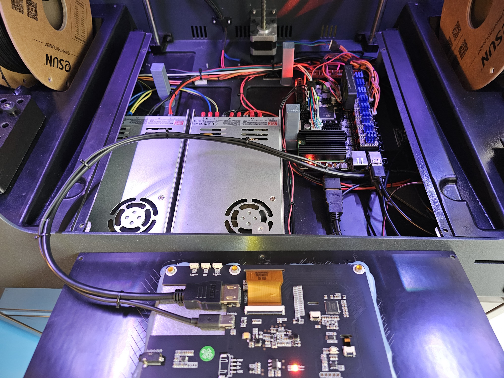